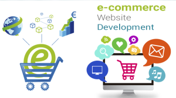

<?xml version="1.0" encoding="UTF-8"?><rss version="2.0"
	xmlns:content="http://purl.org/rss/1.0/modules/content/"
	xmlns:wfw="http://wellformedweb.org/CommentAPI/"
	xmlns:dc="http://purl.org/dc/elements/1.1/"
	xmlns:atom="http://www.w3.org/2005/Atom"
	xmlns:sy="http://purl.org/rss/1.0/modules/syndication/"
	xmlns:slash="http://purl.org/rss/1.0/modules/slash/"
	>

<channel>
	<title>Ecommerce Website Development &#8211; Blog</title>
	<atom:link href="https://www.ehorizon.ae/blog/tag/ecommerce-website-development/feed/" rel="self" type="application/rss+xml" />
	<link>https://www.ehorizon.ae/blog</link>
	<description></description>
	<lastBuildDate>Thu, 01 Mar 2018 05:29:32 +0000</lastBuildDate>
	<language>en-US</language>
	<sy:updatePeriod>hourly</sy:updatePeriod>
	<sy:updateFrequency>1</sy:updateFrequency>
	<generator>https://wordpress.org/?v=4.4.15</generator>
	<item>
		<title>Personalize Business Websites with E-Commerce Website Development in Dubai</title>
		<link>https://www.ehorizon.ae/blog/2016/07/08/personalize-business-websites-with-e-commerce-website-development-in-dubai/</link>
		<comments>https://www.ehorizon.ae/blog/2016/07/08/personalize-business-websites-with-e-commerce-website-development-in-dubai/#comments</comments>
		<pubDate>Fri, 08 Jul 2016 09:41:38 +0000</pubDate>
		<dc:creator><![CDATA[eHorizon]]></dc:creator>
				<category><![CDATA[Ecommerce Website Development]]></category>

		<guid isPermaLink="false">https://www.ehorizon.ae/blog/?p=92</guid>
		<description><![CDATA[<p>It is necessary to give customers a delightful shopping experience to evidently improve your business sales, revenues, and profits. There are diverse elements which must be incorporated into an effective e-commerce website development process. A lot more than structured use of content, page layout, graphics, visuals and attractive designs goes into building an exclusive online [&#8230;]</p>
<p>The post <a rel="nofollow" href="../../../2016/07/08/personalize-business-websites-with-e-commerce-website-development-in-dubai/index.html">Personalize Business Websites with E-Commerce Website Development in Dubai</a> appeared first on <a rel="nofollow" href="../../../index.html">Blog</a>.</p>
]]></description>
				<content:encoded><![CDATA[<p style="text-align: justify;">It is necessary to give customers a delightful shopping experience to evidently improve your business sales, revenues, and profits. There are diverse elements which must be incorporated into an effective e-commerce website development process. A lot more than structured use of content, page layout, graphics, visuals and attractive designs goes into building an exclusive online store for your business. We at eHorizon understand and study business requirements to provide customized and comprehensive services for e-commerce website development in Dubai and around the world.</p>
<p style="text-align: justify;"></p>
<p style="text-align: justify;">E-commerce websites are developed and designed for one ultimate purpose- attracting customers to make online purchases. Your target market will get engaged with your website only if they find it relevant and impressive enough. For the same purpose, more and more businesses are looking for custom website design solutions to portray an outstanding brand image for their visitors. A professional e-commerce website also helps with implementing advertising and marketing strategies to generate optimum returns for your business, only if certain elements are done the right way and put in the right place. It is essential to know and realize what exactly those elements are that can make your business website stand out from the rest. Employing the right services and methods becomes imperative to survive the hard competition in the market.</p>
<p style="text-align: justify;">The designers and developers at eHorizon are in the continuous process of providing compelling e-commerce services to small and large businesses across the world. And we bring to you beneficial tips that can help build and create a user-friendly e-commerce website for favorable returns:</p>
<p style="text-align: justify;"><strong>Strategy comes first</strong>: This includes strategizing the relevance of your e-commerce website. Formulate a defined marketing plan for search engines to bring your website to the top search results. This is mostly done through research, SEO, website optimization, coding, etc.</p>
<p style="text-align: justify;"><strong>Relevant information</strong>: This is the key to competent marketing methods. Your website needs to contain necessary and relevant information, based on which customers can make desirable purchases. Providing customers with precise product description and information leads to outreaching prospects for your business.</p>
<p style="text-align: justify;"><strong>Showcase your products</strong>: To help visitors make prospective purchases, include clear product images so that customers can actually see what they are buying. Showcase your products and services in an engaging, unique yet simple manner that can help customers make purchases with ease.</p>
<p style="text-align: justify;"><strong>Distinguish your business</strong>: Let customers know what makes your business different from the rest. Customers need to be motivated and impressed with your line of products and services, and you need to inform them of your services that give your business an unique edge.</p>
<p style="text-align: justify;"><strong>Privacy and Security</strong>: Build a trust with your potential customers by providing them with a platform for secure and easy transaction processes. Keep their personal information secure, and improve your website’s reliability to attract more customers.</p>
<p style="text-align: justify;"><strong>Simple navigation systems</strong>: Refrain from building e-commerce websites with poor navigation controls. A structured and easy to follow navigation system is required for convenient purchases. Creating a complicated site with too many pages and navigations might just cost one customer for your business.</p>
<p style="text-align: justify;"><strong>Payment options</strong>: When it comes to money, prioritize your customers’ preferences. Provide multiple payment options to help them make an easy and hassle-free purchase. Include popular payment methods and secure gateways to make your customers’ shopping experience an incredible one.</p>
<p style="text-align: justify;"><strong>Appealing designs</strong>: The look of your e-commerce website is what will attract customers to your page. An ideal online platform must be visually attractive with defined content matter and designs to lure customers into purchasing your products. A dull website could be too off-putting for potential customers and they might just leave the page without making any purchases.</p>
<p style="text-align: justify;"><strong>Competition research</strong>: To stay ahead of the competition, you need to ensure that your e-commerce website is performing better than the others. Research on your competitors and study the font, color, graphics, content and keywords that they use. This will give you a vivid idea of how to make your online store stand out in the competitive market.</p>
<p style="text-align: justify;">Irrespective of whether you choose to build an e-commerce website on your own, or hire professional services for the same, it is crucial to implement the above elements for a successful business growth. <strong><a href="../../../../ecommerce-web-development-services.html">E-commerce website development in Dubai</a> </strong>and elsewhere has become a growing need for small and large businesses as it makes your website more unique, creative and innovative. The amalgamation of design with technology and development is what will drive higher profits and revenues for your business as they play an indispensable role in establishing an outstanding e-business platform for your customers.</p>
<p>The post <a rel="nofollow" href="../../../2016/07/08/personalize-business-websites-with-e-commerce-website-development-in-dubai/index.html">Personalize Business Websites with E-Commerce Website Development in Dubai</a> appeared first on <a rel="nofollow" href="../../../index.html">Blog</a>.</p>
]]></content:encoded>
			<wfw:commentRss>https://www.ehorizon.ae/blog/2016/07/08/personalize-business-websites-with-e-commerce-website-development-in-dubai/feed/</wfw:commentRss>
		<slash:comments>1</slash:comments>
		</item>
	</channel>
</rss>

<!-- Localized -->